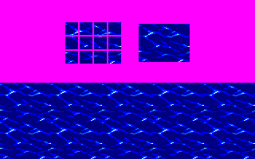
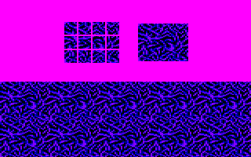

.png)
Goldorak (Amstrad CPC version)
- Projet de jeu pour l'Amstrad CPC -
Histoire de m'amuser, je propose ici des graphismes au format Amstrad CPC qui pourraient être le point de départ d'un jeu sur le thème de Goldorak
D'une manière générale, tous les fichiers sont disponibles > ICI <
Le Concept :
Goldorak sur CPC se veut un SHMUP de type
Galaga.
Ainsi, au début d’une partie le décor s’affiche
puis Goldorak apparait lors d’une séquence d’arrimage.
Arrivent ensuite, par le haut de l’écran, les
formations ennemies qui prennent place.
Se déclenche alors la partie proprement dite
dans laquelle les vaisseaux ennemis (petites soucoupes de Véga) adoptent des
déplacements simples en suivant des schémas prédéfinis (par exemple, déplacement
de gauche à droite puis plongée vers le bas de l’écran, déplacements en arc de
cercle balayant l’écran, déplacement de type Space Invaders, etc…).
Pour se défendre, Goldorak emploie, par défaut,
les Missiles Gamma (sorte de cônes projetés par les planitrons de la soucoupe).
Il est possible de les utiliser à volonté. Dès qu’un missile touche un vaisseau
ennemi, ce dernier explose et est éliminé.
Au bout de 3 salves de vaisseaux, un Golgoth
vient se positionner parmi la flotte ennemi (généralement au centre, en haut de
l’écran).
Ses schémas de déplacement et d’attaque peuvent
être plus complexes ou combinés avec
des mouvements.
La difficulté sera alors de trouver l’arme
exacte qui affaiblira, puis détruira le Golgoth.
Pour cela, le joueur pourra naviguer dans
l’arsenal de Goldorak en appuyant sur la barre d’espace.
Les armes sont nombreuses et chacune possède sa
vitesse d’éxécution, sa portée et sa puissance propre (par exemple, le Fulguro
Poing est plus long à se déclencher à cause de l’animation des bras et le
Cornofulgure avance une portée courte qui obligera Goldorak à privilégier le
combat rapproché, etc.).
Au fil des niveaux, les Golgoths sont de plus en
plus coriaces et difficiles à vaincre.
Le jeu prend fin soit par la défaite de Goldorak
lorsque sa jauge d’énergie est à zéro, soit par sa victoire lorsque tous les
Golgoths sont éliminés.
Les graphismes :
L'intégralité des graphismes a
été réalisée sur Multipaint (http://multipaint.kameli.net)
Pour chaque sprite, il y a la version de base (fond bleu) et la version avec transparence (fond rose)
La palette :
L'écran-titre :
Sprites de l'arrimage (animation d'ouverture de niveau) :
Sprites du Fulguropoings :
.png)
Sprites de Missiles Gamma et du Cornofulgure :

.png)
Sprites de l'explosion d'une soucoupe :

.png)
Sprites de Golgoths et de soucoupes de Véga :
.png)
Background des niveaux (version blocs 8x16 pixels) :
 
Le cockpit (HUD) :

.png)
Les icones de vies de Goldorak s'affichant dan sle HUD :
Ecrans de Game Over :
Mockup :
Le jeu :
Qui sait... un jour peut-être, un programmeur chevronné offrira sur CPC, une terre d'accueil au prince d'Euphor...
En attendant, vous pouvez déjà tester :
- La version AOZ Studio de Baptiste Bidaux : https://app.aoz.studio/nycevhmp/?forced=1670705422956
- La version Love2d de Miguel Vanhove (Beta 04) :
https://crazypiri.eu/goldorak/